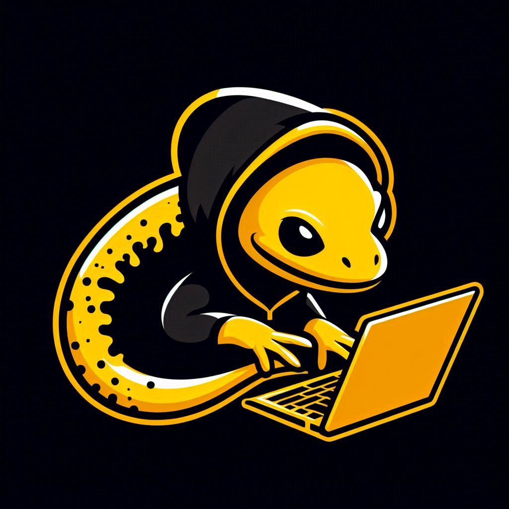

This is a website for cyber-security topic, I want to pubblic some things in this website, like CTF and some of mine projects
Email : cristianchiarilli@gmail.com
instagram : https://instagram.com/_cristianchiarilli_?igshid=NGExMmI2YTkyZg==
Linkedin : Cristian Chiarilli
Git Hub : https://github.com/Octopus-ssh
Cybersecurity is a critical and fundamental aspect for the protection of information and digital systems in an increasingly connected world. With the increase in the use of the internet and digital devices, it has become increasingly important to protect your data and personal information from possible cyber threats, such as hackers, malware, phishing, fraud and DDoS attacks. The consequences of a cybersecurity breach can be devastating, including loss of sensitive data, compromise of personal information, system corruption, reduced productivity, and loss of trust from customers and business partners. Therefore, investing in a robust cybersecurity strategy that includes employee awareness and training, data protection, regular software patching, and ongoing threat monitoring is critical. Ultimately, cybersecurity is a matter of safety and accountability for all of us. We must be aware of threats and take the necessary steps to protect ourselves and our systems. Investing in cybersecurity is an investment that is worth making to ensure the protection of our data and personal information.
